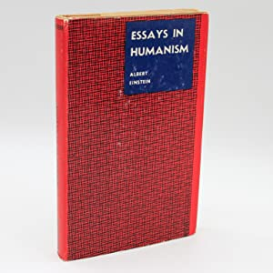

Multiple disciplines
Albert Einstein is best known for his contribution to science. One prominent example is his formulation of E=MC²; a central formula in Einstein's theory of relativity and a rather foundational concept to modern Physics as a whole.
However, did you know that Einstein's interests went beyond the realm of science? He theorized about very different disciplines. Poetic quotes such as the following illustrate Einstein's affiliation with the arts and social sciences alike:
In scientific thinking are always present elements of poetry. Science and music requires a thought homogeneous. ~ Albert Einstein
Holistic learning
Because of these varied interests, Einstein conversed frequently with scholars from other disicplines and learned about 'the Arts' in the form of classic literature and the like. This open, holistic learning approach to Einstein's academics helps us to understand how the Olympia Academy originated
Physics & math lessons
In 1901, Einstein placed a newspaper advertisement offering private lessons in Physics and Math. Among its repondents was the Romanian Maurice Solovine. As a student of Philosophy, Solovine had quite little experience with Math or Physics. However, he had a deep desire to learn about what he called the "real nature": instead of "Philosophy, Ancient Greek and Literature" he wanted to learn "Mathetmatics, Physics and Geology" 1.
Based on Solovine's memoirs, it seems that the student sought to utilise the grasp of the natural sciences as a form of 'empirical study' for an enhanced understanding of the world. In other words, Einstein's newspaper advertisement seemingly fulfilled Solovine's search for a bottom-up extension of his study of the Arts.

The interior of Einstein's house in Bern, Switserland. It was in this house that the Olympia Academy converged and debated about a variety of topics
While Solovine and Einstein did discuss Physics and Math, the private lessons never really materialized. Instead, Solovine and Einstein had lengthy discussions about a wide range of phenomena and books from many different disciplines.
More members
Not long after Solovine and Einstein started debating on a frequent basis, they were joined by Einstein's neighbour; a mathematician named Habicht. They were joined by others too at later times. But, their presence was rather temporary in nature. So, while The Olympia Academy was somewhat transformatory in nature, the three founders were a constant factor.
Understanding the person
Unfortunately, we lack contemporary records of the meetings of the Olympia Acadmy. Minutes of these meetings could help calibrate our image of Einstein; the man is strongly affiliated to his congress attendence and published works as part of his field Natural Sciences, but Einstein was probably further inspired, academically, by other disciplines such as philosophy, poetry and economy2.

'Essays in Humanism' by Einstein (1950) illustrates his 'Liberal Arts' approach to academics. In this book, Einstein has assembled a series of essays discussing the world economy, "Science and Civilization [chapter 7]", weapons of mass destruction and, lastly, suggestions to solve the world's problems 3.
We see this concern with Humanities recur in Einstein's poetry, letters, books, statements and suchlike expressions, but it would be very interesting to grasp to what degree these interests added onto or conjoined with Einstein's famous study of natural sciences.
References
A selection of useful resources:
1. Solovine, Maurice. “Freundschaft Mit Albert Einstein.” Physik Journal, vol. 15, no. 3, 1959, pp. 97–103.
Accessed through the Wiley Online Library.
2. Highfield, Robert. The Private Lives of Albert Einstein. Faber & Faber, 1994.
Accessed through the Internet Archive.
3. Einstein, Albert. Essays in Humanism, 1950.
Accessed through Google Books.